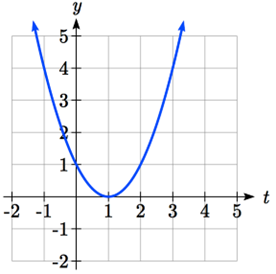
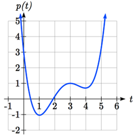

Since functions represent how an output quantity varies with an input quantity, it is natural to ask about the rate at which the values of the function are changing.
For example, the function \(g\) below gives the average cost \(C\text{,}\) in dollars, of a gallon of gasoline \(t\) years after 2000.
\(t\)
2
3
4
5
6
7
8
9
\(g(t)\)
1.47
1.69
1.94
2.30
2.51
2.64
3.01
2.14
If we were interested in how the gas prices had changed between 2002 and 2009, we could compute that the cost per gallon had increased from $1.47 to $2.14, an increase of $0.67. While this is interesting, it might be more useful to look at how much the price changed per year. You are probably noticing that the price didn’t change the same amount each year, so we would be finding the average rate of change over a specified amount of time.
The gas price increased by $0.67 from 2002 to 2009, over 7 years, for an average of $0.67/7 years \(\approx\) $0.096 per year. On average, the price of gas increased by about 9.6 cents each year.
Definition1.3.1.Rate of Change.
A rate of change describes how the output quantity changes in relation to the input quantity. The units on a rate of change are “output units per input unit” or ”\(\dfrac{\text{output units}}{\text{input unit}}\)”.
Some other examples of rates of change would be quantities like:
A population of rats increases by 40 rats per week.
A barista earns $9 per hour (dollars per hour).
A farmer plants 60,000 onions per acre.
A car can drive 27 miles per gallon of gasoline.
A population of grey whales decreases by 8 whales per year.
The amount of money in your college account decreases by $8,000 per semester.
Definition1.3.2.Average Rate of Change.
The average rate of change between two input values is the total change of the function values (output values) divided by the change in the input values. If we are given two pairs of input and output values \((x_{1},y_{1})\) and \((x_{2},y_{2} )\text{,}\) then we compute the average rate of change from the first point to the second point with the following calculation:
\begin{equation*}
\text{Average rate of change}= \dfrac{\text{Change of Output}}{\text{Change of Input}}=\dfrac{\Delta y}{\Delta x}=\dfrac{y_2-y_1}{x_2-x_1}
\end{equation*}
Example1.3.3.
Using the cost-of-gas function from earlier, find the average rate of change between 2007 and 2009
From the table, in 2007 the cost of gas was $2.64. In 2009 the cost was $2.14.
The input (years) has changed by 2. The output has changed by $2.14 - $2.64 = -$0.50. The average rate of change is then \(\dfrac{-\$0.50}{2 \text{ years}}=-0.25\) dollars per year.
Checkpoint1.3.4.
Using the same cost-of-gas function, find the average rate of change between 2003 and 2008.
Notice that in the last example the change of output was negative since the output value of the function had decreased. Correspondingly, the average rate of change is negative.
Example1.3.5.
Given the function g(t) shown here, find the average rate of change on the interval \([0, 3]\text{.}\)

Figure1.3.6.
At \(t = 0\text{,}\) the graph shows \(g(0)=1\text{.}\) At \(t = 3\text{,}\) the graph shows \(g(3)=4\text{.}\)
The output has changed by 3 while the input has changed by 3, giving an average rate of change of: \(\dfrac{4-1}{3-0}=\dfrac{3}{3}=1\)
Example1.3.7.
On a road trip, after picking up your friend who lives 10 miles away, you decide to record your distance from home over time. Find your average speed over the first 6 hours.
\(t\) (hours)
0
1
2
3
4
5
6
7
\(D\) (miles)
10
55
90
153
214
240
292
300
Here, your average speed is the average rate of change. You traveled 282 miles in 6 hours, for an average speed of \(\dfrac{292-10}{6-0}=\dfrac{282}{6}= 47\) miles per hour.
We can more formally state the average rate of change calculation using function notation.
Definition1.3.8.Average Rate of Change using Function Notation.
Given a function \(f(x)\text{,}\) the average rate of change on the interval \([a, b]\) is
\begin{equation*}
\text{Average rate of change}= \dfrac{\text{Change of Output}}{\text{Change of Input}}=\dfrac{f(b)-f(a)}{b-a}
\end{equation*}
Example1.3.9.
Compute the average rate of change of \(f(x)=x^{2}-\dfrac{1}{x}\) on the interval \([2, 4]\text{.}\)
We can start by computing the function values at each endpoint of the interval
Now computing the average rate of change \(\text{Average rate of change}= \dfrac{f(4)-f(2)}{4-2}=\dfrac{\frac{63}{4}-\frac{7}{2}}{4-2}=\dfrac{\frac{49}{4}}{2}=\dfrac{49}{8}\)
Checkpoint1.3.10.
Find the average rate of change of \(f(x)=x-2\sqrt{x}\) on the interval \([1, 9]\text{.}\)
Example1.3.11.
The magnetic force \(F\text{,}\) measured in Newtons, between two magnets is related to the distance between the magnets \(d\text{,}\) in centimeters, by the formula \(h(d)=\dfrac{2}{d^2}\) . Find the average rate of change of force if the distance between the magnets is increased from 2 cm to 6 cm.
We are computing the average rate of change of \(h(d)=\dfrac{2}{d^2}\) on the interval \([2, 6]\text{.}\)\(\text{Average rate of change}= \dfrac{h(6)-h(2)}{6-2}\)
This result tells us the average rate of change between \(t = 0\) and any other point \(t = a\text{.}\) For example, on the interval \([0, 5]\text{,}\) the average rate of change would be \(5+3 = 8\text{.}\)
Checkpoint1.3.13.
Find the average rate of change of \(f(x)=x^{3}+2\) on the interval \([a,a+h]\text{.}\)
Subsection1.3.2Graphical Behavior of Functions
As part of exploring how functions change, it is interesting to explore the graphical behavior of functions.
Definition1.3.14.Increasing/Decreasing.
A function is increasing on an interval if the function values increase as the inputs increase. More formally, a function is increasing if \(f(a) < f(b)\) for any two input values \(a\) and \(b\) in the interval with \(a<b\text{.}\) The average rate of change of an increasing function is positive.
A function is decreasing on an interval if the function values decrease as the inputs increase. More formally, a function is decreasing if \(f(a) > f(b)\) for any two input values \(a\) and \(b\) in the interval with \(a<b\text{.}\) The average rate of change of a decreasing function is negative.
Example1.3.15.
Given the function p(t) graphed here, on what intervals does the function appear to be increasing?

Figure1.3.16.
The function appears to be increasing from \(t = 1\) to \(t = 3\text{,}\) and from \(t = 4\) on.
In interval notation, we would say the function appears to be increasing on the interval \((1,3)\) and the interval \((4,\infty)\text{,}\) or \((1,3)\cup(4,\infty)\text{.}\)
Notice in the last example that we used open intervals (intervals that don’t include the endpoints) since the function is neither increasing nor decreasing at \(t = 1, 3, \text{ or }4\text{.}\)
Subsection1.3.3Behaviors of the Toolkit Functions
We will now return to our toolkit functions and discuss their graphical behavior.
Function
Increasing/Decreasing
Constant Function: \(f(x)=c\)
Neither increasing or decreasing
Identity Function: \(f(x)=x\)
Increasing on \((-\infty,\infty)\)
Quadratic Function: \(f(x)=x^{2}\)
Decreasing on \((-\infty, 0)\text{,}\) Increasing on \((0,\infty)\)
Cubic Function: \(f(x)=x^{3}\)
Increasing on \((-\infty,0)\cup(0,\infty)\)
Reciprocal: \(f(x)=\dfrac{1}{x}\)
Decreasing on \((-\infty, 0)\cup(0,\infty)\)
Reciprocal Squared: \(f(x)=\dfrac{1}{x^2}\)
Increasing on \((-\infty, 0)\text{,}\) Decreasing on \((0,\infty)\)
Cube Root: \(f(x)=\sqrt[3]{x}\)
Increasing on \((-\infty,0)\cup(0,\infty)\)
Square Root: \(f(x)=\sqrt{x}\)
Increasing on \((0,\infty)\)
Subsection1.3.4Conclusions
Example1.3.17.Important Topics of This Section.
Rate of Change
Average Rate of Change
Calculating Average Rate of Change using Function Notation
Increasing/Decreasing Functions
Checkpoint1.3.18.
[Exercise Answers]
\(\dfrac{\$3.01-\$1.69}{5\text{ years}}=\dfrac{\$1.32}{5\text{ years}}= 0.264\) dollars per year.
Average rate of change \(= \dfrac{f(9)-f(1)}{9-1}=\dfrac{(9-2\sqrt{9})-(1-2\sqrt{1})}{9-1}=\dfrac{3-(-1)}{9-1}=\dfrac{4}{8}=\dfrac{1}{2}1\)